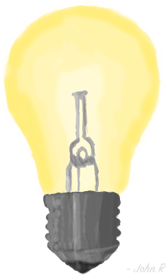

Electricity
Welcome everyone to our website.
This site has been made by the students of 8X to inform teachers, students, and parents of the electricity usage at our school. As well as what we are trying to do to minimize it.
This year so far we have used enough electricity
to power The MCG for 160 AFL night games! That’s over half the games in a season! You could also toast 39,268,281 slices of bread with this amount of electricity. We have a daily average electricity usage of 2,500 kilowatts per day. Enough
to toast 2,727 slices of toast.
To quote Albert Einstein
“I know not with what weapons World War III will be fought, but World War IV will be fought with sticks and stones.”
While I am not talking about another World War, it is true that we will soon run out of our precious resources. The way we are going there will not be a World War that depletes our of resources. It will simply be our way of living.
Links
Here are some other works created by our class